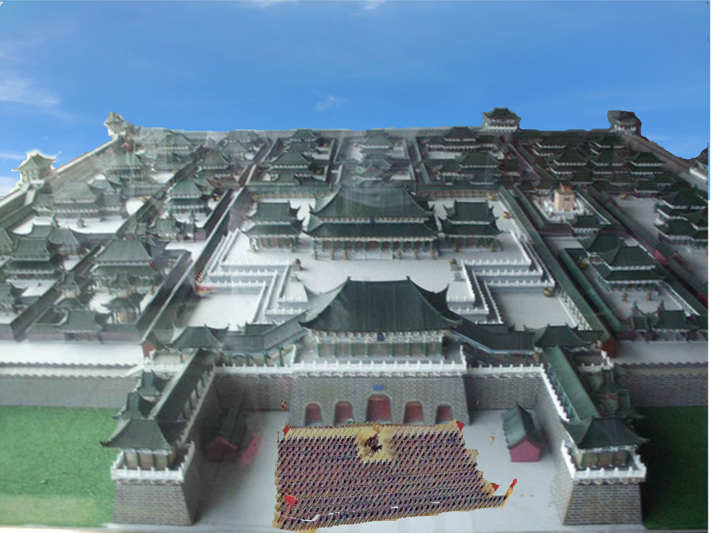

Humans vs. Giants
 In ancient China, Kaifung City was the North Song Dynasty's capital. In Kaifung, everyday was very busy, lively, and harmonious.
In Kaifung, everyday was very busy, lively, and harmonious.
 But one day, beyond The Great Wall, the invasion of "Giants" happened.
But one day, beyond The Great Wall, the invasion of "Giants" happened.
 The giants started to break the Great Wall, and some even ate soldiers who were in the charge of the wall.
The giants started to break the Great Wall, and some even ate soldiers who were in the charge of the wall.
 The old emperor got sick, and passed away. Before he died, he sent a general to fight against the Giants.
The old emperor got sick, and passed away. Before he died, he sent a general to fight against the Giants.
 This general, named YANG-CHIN, tied a rope and fly behind a Giant , used a bow and an arrow, and shot him.
This general, named YANG-CHIN, tied a rope and fly behind a Giant , used a bow and an arrow, and shot him.
 Also, he used his wisdom to lure another Giant, then killed him unexpectally.
Also, he used his wisdom to lure another Giant, then killed him unexpectally.
 The battle lasted a year, and both side had a number of sacrifices and injuries, but it still not ended.
The battle lasted a year, and both side had a number of sacrifices and injuries, but it still not ended.
 Suddenly, SMASH! KA-BOOM! A part of wall collapsed due to Giants' punch and kick, and they started damaging.
Suddenly, SMASH! KA-BOOM! A part of wall collapsed due to Giants' punch and kick, and they started damaging.
 Because of this, many towns were destroyed by those Giants, causing a bunch of deaths and ruined villages.
Because of this, many towns were destroyed by those Giants, causing a bunch of deaths and ruined villages.